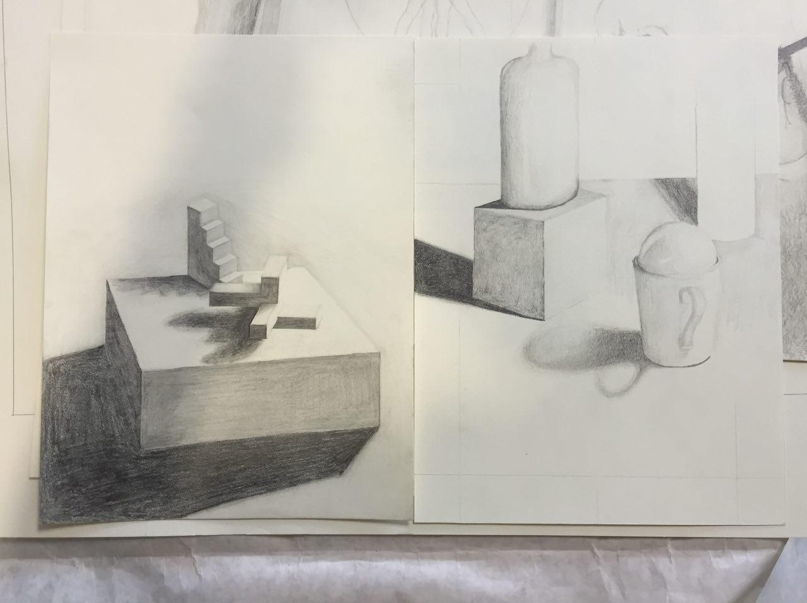

Latest Posts
Summer, 2018
- Character Commission
-
This is actually part of a series of characters for a Dungeons and Dragons campaign. Still a working draft, all digital on Wacom Cintiq.
Spring, 2018
- Paradise Made
-
I was inspired by John Milton’s Paradise Lost to make a comic book with no words that explores the morality, utility, and vanity of the characters in the book and, by extension, all of humanity. The image displayed below is a PNG and thus subject to compression, for the raw image in full resolution with very little compression please click HERE.

Since developing this cover image I have since done some test screen printing of it while I work on the inside of the book. The greyscale halftone black ink layer is below. This looks very similar, but if you open the raw files and zoom in you can see that the one below is made up of different sized black dots. The density of those dots when you zoom back out results in all the different shades of grey needed to create the image.
Spring, 2018
- Internet Friend
-
I used an LSTM text generating neural network to teach a computer English using only the messages I had sent prior to downloading the data from, and then deleting, my Facebook account. Needless to say, the computer did not learn very intelligible English. It did however, learn phonemes, which are sounds with meaning, almost like syllables, but even shorter, like the phonetic breakdown of words. I plan on revisiting this to make it a little more interactive, like being able to talk to myself, but only the version of me that was on Facebook.
Spring, 2018
- now_in_billions_of_colors
-
An internet-based project currently taking the form of performance art, this piece is a collaboration with Clark Addis. We are posting a color a day, iterating through the RGB color spectrum. Long term goals are to automate the process and start a longer version that could theoretically display 16,777,216 which would run for almost 46,000 years.
Fall, 2017
- Portrait of an Artist as a Young Engineer
-
Installation
This project started with a romanticized vision of my return to art after spending 2.5 years in engineering. After some initial critiques and chatting with visiting artists, I settled on this idea of taking that core symbol of my favorite childhood toy, the 2x4 LEGO brick, and experimenting with the construction of it. I had seen this video at some point, and had been playing with silicone, so I decided I wanted to make a “flesh brick” — a LEGO fetus if you will. A soft, fleshy, mildly revolting, and definitely infantile brick would endeavor to evoke a sense of the famous coming of age novel by Jame Joyce from which the piece's name is taken. To go along with that, I picked up screen printing to produce books of “Impossible Instructions” to be used with this brick of life. They are blank. I like to let people draw their own conclusions, so I shall leave it there with a description.

Pedestal
This is the image used to burn the screen I used to ink directly onto the pedestal of the exhibit. I had just started the process of printing and hand cutting out the letters when I realized it was going to be a tediously slow undertaking. So, I took a risk with my freshly sanded and painted pedestal and tried screen printing right onto the side, and it worked out great.
Book Covers
These are the black screen layer only, so where there is black in the image is where ink will be let through the screen.
Version 2
Final casting in some SmoothOn Dragon Skin Medium, which is the leading silicone used for ballistics testing, meant to simulate human muscle and flesh.
Version 1
First attempt at taking a silicone cast out of a silicone mold — lots of mold release and SmoothOn Rebound 25.
Master Sculpt
The original clay sculpt of the LEGO brick. There is a wooden form in the core to save on some clay, and the final dimensions are 30cm x 15cm x 15cm.
Spring, 2017
- Self Portrain w/ Mirror
-
This was the first self portrait I had ever attempted. While half is unfinished, I got to focus more on detail work, as demonstrated by the reflection of the paper in my eye.
Spring, 2017
- Portrait from Memory
-
Drew my brother from memory. Working to achieve realism, the presence of the glass is alluded to with the distortion of the eye.
Spring 2017
- Field Notes
-
This piece, depicting a raccoon taking field notes, takes a journey into the surreal. By incorporating DaVinci’s Vitruvian Man and other artifacts of humanity, it questions the definition of a “higher” life form.
Winter, 2016
- White on White Still Life
-
Early work on greyscale drawing. The mug and its shadow I'm particularly fond of. This work helped provide an underlying understanding of graphite drawing, which has carried over into much of the other work I have done since, particularly black ink printing.

Fall, 2016
- Bread Head
-
This sticker was designed for the Various Breads and Butters podcast hosted by two professors at Lafayette College. They had long had a sticker of a person sitting in a chair, but the head had been replaced with a loaf of bread. We referred to this character as "The Bread Head". I took this shameless poaching of the Grateful Dead, and developed the parody to its fullest extent.

Summer, 2016
- Day Blind Stars
-
I've always loved stars. For me, being able to see stars at night was a factor when picking out colleges. Inspired by the text of The Peace of Wild Things by Wendell Berry I wanted to make a peace of my own that celebrated the night time. Starting with the stippled image I inverted the colors to produce the final image. This very much relates to the multiple inversion of an image required by the screen printing process, as well as positive and negative sculpts and casts.